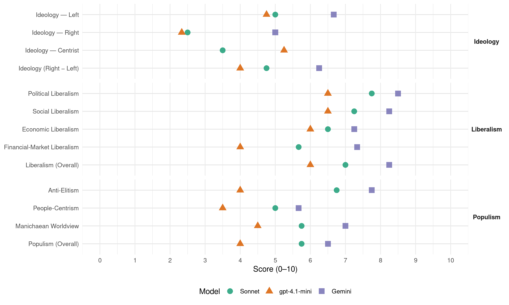

SDSM (North Macedonia, 2002)
manifesto_id 89221_200209
Get full text: This site shows derived annotations and short verbatim quotes only. The full manifesto text is © Manifesto Project / WZB — obtain it via manifesto-project.wzb.eu using the manifesto_id above.
Headline scores
| Dimension | Sonnet | gpt-4.1-mini | Gemini |
|---|---|---|---|
| Populism (Overall) | 5.8 | 4.0 | 6.5 |
| Anti-Elitism | 6.8 | 4.0 | 7.8 |
| People-Centrism | 5.0 | 3.5 | 5.7 |
| Manichaean Worldview | 5.8 | 4.5 | 7.0 |
| Ideology (Right − Left) | 4.8 | 4.0 | 6.2 |
| Liberalism (Overall) | 7.0 | 6.0 | 8.2 |
| Political Liberalism | 7.8 | 6.5 | 8.5 |
| Social Liberalism | 7.2 | 6.5 | 8.2 |
| Economic Liberalism | 6.5 | 6.0 | 7.2 |
| Financial-Market Liberalism | 5.7 | 4.0 | 7.3 |
Evidence per dimension
Economic Liberalism
Gemini · score 8.0 · verified · chunk 1
“либерализација на секторот, што подразбира законско отворање”
државниот капитал. второ, либерализација на секторот, што подразбира законско отворање на пазарот на енергија и овозможување
Gemini · score 7.0 · verified · chunk 2
“поддршка на конкуренцијата и охрабрување на приватните инвестиции”
како стратегиска стопанска гранка, врз основа на поддршка на конкуренцијата и охрабрување на приватните инвестиции. За реализација на политиката
Gemini · score 7.0 · verified · chunk 3
“регулира пазарите според јавниот интерес и да ја негува пазарната конкуренција”
јавната сфера во која се одвива дебатата за прашањата од нејзина надлежност; да создава различни јавни добра, меѓу кои се и видовите на колективна безбедност и благосостојба; да ги регулира пазарите според јавниот интерес и да ја негува пазарната конкуренција, кога се заканува монополот;
Gemini · score 7.0 · verified · chunk 4
“развивање на пазарното стопанство”
општество; економски реформи и развивање на пазарното стопанство; интегрирање на Република Македонија
gpt-4.1-mini · score 8.0 · verified · chunk 1
“намалување на даночните ослободувања и олеснувања преку проширување на даночната основа”
Владата на СДСМ преку реформа на даночната политика ќе обезбеди: намалување на учеството на индиректните даноци во вкупното даночно оптоварување; намалување на даночните ослободувања и олеснувања преку проширување на даночната основа.
gpt-4.1-mini · score 4.0 · verified · chunk 2
“Владата на СДСМ ќе води строго селективна политика за нови кредитни задолжувања”
Владата на СДСМ ќе води строго селективна политика за нови кредитни задолжувања, а нагласено ќе го поттикнува недолжничкиот трансфер на капитал, пред се преку странските директни вложувања.
gpt-4.1-mini · score 6.0 · verified · chunk 3
“да ја негува пазарната конкуренција, кога се заканува монополот”
…да ја создава и да ја заштитува јавната сфера во која се одвива дебатата за прашањата од нејзина надлежност; да создава различни јавни добра, меѓу кои се и видовите на колективна безбедност и благосостојба; да ги регулира пазарите според јавниот интерес и да ја негува пазарната конкуренција, кога се заканува монополот…
gpt-4.1-mini · score 6.0 · verified · chunk 4
“економски реформи и развивање на пазарното стопанство”
…јакнење и почитување на правната држава како гарант за човековите права и слободи; развивање на демократските процеси и градење на цивилно општество; економски реформи и развивање на пазарното стопанство; интегрирање на Република Македонија во Европската унија…
Sonnet · score 7.0 · verified · chunk 1
“намалување на царинското оптоварување на стопанските субјекти”
ќе го намали царинското оптоварување на стопанските субјекти и на граѓаните и да ја зголеми конкурентноста на нашето стопанство; да ја олесни трговската размена на Македонија со светот
Sonnet · score 6.0 · verified · chunk 2
“поддршка на конкуренцијата и охрабрување на приватните инвестиции”
врз основа на поддршка на конкуренцијата и охрабрување на приватните инвестиции. За реализација на политиката во оваа област Владата на СДСМ
Sonnet · score 6.0 · verified · chunk 3
“да ги регулира пазарите според јавниот интерес и да ја негува пазарната конкуренција”
да ги регулира пазарите според јавниот интерес и да ја негува пазарната конкуренција, кога се заканува монополот
Sonnet · score 7.0 · verified · chunk 4
“развивање на пазарното стопанство”
развивање на демократските процеси и градење на цивилно општество; економски реформи и развивање на пазарното стопанство; интегрирање на Република Македонија во Европската унија
Financial-Market Liberalism
Gemini · score 8.0 · verified · chunk 1
“зајакнување на довербата во банкарскиот систем”
домашната акумулација (односно штедењето) особено преку зајакнување на довербата во банкарскиот систем. Промовирање на Македонија во привлечна
Gemini · score 7.0 · verified · chunk 2
“услови за формирање хипотекарна банка”
локално ниво коишто ќе ја стимулираат, координираат и реализираат станбената политика: услови за формирање хипотекарна банка за станбена изградба која ќе претставува
Gemini · score 7.0 · verified · chunk 3
“задолжително капитално финансирано пензиско осигурување”
задолжително пензиско и инвалидско осигурување врз основа на генерациска солидарност: задолжително капитално финансирано пензиско осигурување; и доброволно капитално финансирано пензиско осигурување.
gpt-4.1-mini · score 4.0 · verified · chunk 1
“Владата ќе изврши контрола врз приватизациите извршени во овој сектор”
Владата на СДСМ ќе изврши контрола врз приватизациите извршени во овој сектор и на трансакциите преку кои високи партиски функционери станаа сопственици на банки со цел да утврди дали се извршени во согласност со законот.
Sonnet · score 6.0 · verified · chunk 1
“финансискиот капитал во функција на економскиот развој”
да се стави финансискиот капитал во функција на економскиот развој; да се зголеми довербата во банките; банкарскиот систем да стане стопанска гранка од значење за развојот
Sonnet · score 6.0 · verified · chunk 2
“услови за формирање хипотекарна банка за станбена изградба”
услови за формирање хипотекарна банка за станбена изградба која ќе претставува институционално и финансиско решение за масовна станбена изградба
Sonnet · score 5.0 · verified · chunk 3
“задолжително капитално финансирано пензиско осигурување”
задолжително пензиско и инвалидско осигурување врз основа на генерациска солидарност: задолжително капитално финансирано пензиско осигурување; и доброволно капитално финансирано пензиско осигурување
Political Liberalism
Gemini · score 9.0 · verified · chunk 1
“вредностите на парламентарната демократија”
семејството ние сме за: одбрана и унапредување на вредностите на парламентарната демократија; заштитување и унапредување на човековите
Gemini · score 8.0 · verified · chunk 2
“да го врати владеењето на правото”
СДСМ во сферата на урбанизмот ќе ги има следниве приоритети: да го врати владеењето на правото во областа на урбанизмот и градењето
Gemini · score 9.0 · verified · chunk 3
“вратиме концептот на владеење на правото”
Во Македонија ќе го вратиме концептот на владеење на правото, кој го претпоставува принципот на законитост.
Gemini · score 8.0 · verified · chunk 4
“почитување на правната држава”
националното етаблирање на државата; јакнење и почитување на правната држава како гарант за човековите
gpt-4.1-mini · score 9.0 · verified · chunk 1
“одбрана и унапредување на вредностите на парламентарната демократија”
Како дел од семејството ние сме за: одбрана и унапредување на вредностите на парламентарната демократија; заштитување и унапредување на човековите права и слободи; борба за развој на слободно, плурално и праведно општество.
gpt-4.1-mini · score 4.0 · verified · chunk 2
“Владата на СДСМ ќе ја почитува автономијата на универзитетите”
Владата на СДСМ ќе ја почитува автономијата на универзитетите во реализацијата на високообразовната и научноистражувачката дејност.
gpt-4.1-mini · score 7.0 · verified · chunk 3
“Владата на СДСМ ќе го вратиме владеењето на правото”
…Во Македонија ќе го вратиме владеењето на правото. Човековите права гарантирани со Уставот и законите на земјата ќе се почитуваат независно од етничката, религиозната или политичката припадност на граѓаните. Ние ќе се придржуваме до принципот ”сите права за секој граѓанин на Македонија”…
gpt-4.1-mini · score 6.0 · verified · chunk 4
“јакнење и почитување на правната држава”
…јакнење и почитување на правната држава како гарант за човековите права и слободи; развивање на демократските процеси и градење на цивилно општество; економски реформи и развивање на пазарното стопанство; интегрирање на Република Македонија во Европската унија…
Sonnet · score 8.0 · verified · chunk 1
“одбрана и унапредување на вредностите на парламентарната демократија”
Како дел од семејството ние сме за: одбрана и унапредување на вредностите на парламентарната демократија; заштитување и унапредување на човековите права и слободи
Sonnet · score 7.0 · verified · chunk 2
“да го врати владеењето на правото”
да го врати владеењето на правото во областа на урбанизмот и градењето и да овозможи јавна контрола
Sonnet · score 8.0 · verified · chunk 3
“ќе гарантира одржување слободни и фер повеќепартиски избори”
Владата на СДСМ: ќе гарантира одржување слободни и фер повеќепартиски избори и мирно примопредавање на власта како услов за избор на легитимни органи на власта
Sonnet · score 8.0 · verified · chunk 4
“развивање на демократските процеси и градење на цивилно општество”
јакнење и почитување на правната држава како гарант за човековите права и слободи; развивање на демократските процеси и градење на цивилно општество; економски реформи
Liberalism (Overall)
Gemini · score 9.0 · verified · chunk 1
“вредностите на парламентарната демократија”
семејството ние сме за: одбрана и унапредување на вредностите на парламентарната демократија; заштитување и унапредување на човековите
Gemini · score 8.0 · verified · chunk 2
“да го врати владеењето на правото”
СДСМ во сферата на урбанизмот ќе ги има следниве приоритети: да го врати владеењето на правото во областа на урбанизмот и градењето
Gemini · score 8.0 · verified · chunk 3
“вратиме концептот на владеење на правото”
Во Македонија ќе го вратиме концептот на владеење на правото, кој го претпоставува принципот на законитост.
Gemini · score 8.0 · verified · chunk 4
“почитување на правната држава”
националното етаблирање на државата; јакнење и почитување на правната држава како гарант за човековите
gpt-4.1-mini · score 7.0 · verified · chunk 1
“одбрана и унапредување на вредностите на парламентарната демократија”
Како дел од семејството ние сме за: одбрана и унапредување на вредностите на парламентарната демократија; заштитување и унапредување на човековите права и слободи; борба за развој на слободно, плурално и праведно општество.
gpt-4.1-mini · score 4.0 · verified · chunk 2
“Владата на СДСМ ќе ја почитува автономијата на универзитетите”
Владата на СДСМ ќе ја почитува автономијата на универзитетите во реализацијата на високообразовната и научноистражувачката дејност.
gpt-4.1-mini · score 7.0 · verified · chunk 3
“Владата на СДСМ ќе го вратиме владеењето на правото”
…Во Македонија ќе го вратиме владеењето на правото. Човековите права гарантирани со Уставот и законите на земјата ќе се почитуваат независно од етничката, религиозната или политичката припадност на граѓаните. Ние ќе се придржуваме до принципот ”сите права за секој граѓанин на Македонија”…
gpt-4.1-mini · score 6.0 · verified · chunk 4
“економски реформи и развивање на пазарното стопанство”
…јакнење и почитување на правната држава како гарант за човековите права и слободи; развивање на демократските процеси и градење на цивилно општество; економски реформи и развивање на пазарното стопанство; интегрирање на Република Македонија во Европската унија…
Sonnet · score 7.0 · verified · chunk 1
“одбрана и унапредување на вредностите на парламентарната демократија”
Како дел од семејството ние сме за: одбрана и унапредување на вредностите на парламентарната демократија; заштитување и унапредување на човековите права и слободи
Sonnet · score 7.0 · verified · chunk 2
“поддршка на конкуренцијата и охрабрување на приватните инвестиции”
врз основа на поддршка на конкуренцијата и охрабрување на приватните инвестиции. За реализација на политиката во оваа област Владата на СДСМ
Sonnet · score 7.0 · verified · chunk 3
“слободата на медиумите е темел на човековите права”
За СДСМ слободата на медиумите е темел на човековите права и е гаранција за сите други слободи.
Sonnet · score 7.0 · verified · chunk 4
“развивање на демократските процеси и градење на цивилно општество”
јакнење и почитување на правната држава како гарант за човековите права и слободи; развивање на демократските процеси и градење на цивилно општество; економски реформи
Anti-Elitism
Gemini · score 8.0 · verified · chunk 1
“криминалот составен дел од работата на властодршците”
патриотизмот за надмината работа, а криминалот составен дел од работата на властодршците. Денес, за жал, идоли на
Gemini · score 8.0 · verified · chunk 2
“Крајно неодговорниот однос на актуелната власт”
и на надворешната задолженост Крајно неодговорниот однос на актуелната власт кон ресорот економија и отсуството
Gemini · score 8.0 · verified · chunk 3
“партиските моќници ја спроведуваат само својата стратегија”
институционализација на неспособноста и неодговорноста на сите нивоа. Партиските моќници ја спроведуваат само својата стратегија за задоволување на личните интереси
Gemini · score 7.0 · verified · chunk 4
“целосно корумпирана владејачка структура”
не го спречува криминалното и шверцерско дивеење и има целосно корумпирана владејачка структура. Co таква позиција
gpt-4.1-mini · score 7.0 · verified · chunk 1
“Да се владее, значи едни, не многу на број, да одлучуваат за сите други”
Да се владее, значи едни, не многу на број, да одлучуваат за сите други. Едни да бидат над сите други. Едни да грешат, а последиците да ги чувствуваат сите.
gpt-4.1-mini · score 3.0 · verified · chunk 2
“Крајно неодговорниот однос на актуелната власт кон ресорот економија”
Крајно неодговорниот однос на актуелната власт кон ресорот економија и отсуството на една долгорочна развојна економска стратегија во која треба да се афирмираат приоритетите на македонското стопанство во стоковната размена со странство ја доведе Македонија до работ на сопствената егзистенција и борба за сопствен производен идентитет.
gpt-4.1-mini · score 3.0 · verified · chunk 3
“партиските моќници ја спроведуваат само својата стратегија”
…на клучни позиции се поставени ”политички подобни” и најчесто нестручни, етички и морално интелектуално инфериорни кадри, со што е извршена институционализација на неспособноста и неодговорноста на сите нивоа. Партиските моќници ја спроведуваат само својата стратегија за задоволување на личните интереси во здравството, а не за унапредување на системот…
gpt-4.1-mini · score 3.0 · verified · chunk 4
“целосно корумпирана владејачка структура”
…не го спречува криминалното и шверцерско дивеење и има целосно корумпирана владејачка структура. Co таква позиција секаква меѓународна активност…
Sonnet · score 6.0 · verified · chunk 1
“лакоми и неодговорни во власта, шверцери во царината, криминалци во полицијата”
Никогаш повеќе лакоми и неодговорни во власта, шверцери во царината, криминалци во полицијата! СДСМ ќе направи се да ја промени оваа состојба.
Sonnet · score 7.0 · verified · chunk 2
“Крајно неодговорниот однос на актуелната власт”
Крајно неодговорниот однос на актуелната власт кон ресорот економија и отсуството на една долгорочна развојна економска стратегија
Sonnet · score 7.0 · verified · chunk 3
“Партиските моќници ја спроведуваат само својата стратегија за задоволување на личните интереси”
На клучни позиции се поставени ‘политички подобни’ и најчесто нестручни… Партиските моќници ја спроведуваат само својата стратегија за задоволување на личните интереси во здравството, а не за унапредување на системот
Sonnet · score 7.0 · verified · chunk 4
“целосно корумпирана владејачка структура”
го носи имиџот на земја која не ги застапува стандардите на развиените парламентарни демократии, не ја развива правната држава, не го спречува криминалното и шверцерско дивеење и има целосно корумпирана владејачка структура
Ideology — Centrist
gpt-4.1-mini · score 7.0 · verified · chunk 1
“Политиката ја гледаме како простор за соработка во кој се трага по заеднички основи”
Ние ја гледаме политиката како простор за соработка во кој се трага по заеднички основи и тогаш кога постојат сериозни разлики и како простор во кој, и покрај разликите, може да се обезбеди потребното единство во функција на општествениот развој.
gpt-4.1-mini · score 4.0 · verified · chunk 2
“Владата на СДСМ ќе го почитува фактот дека економскиот просперитет на Македонија”
Владата на СДСМ ќе го почитува фактот дека економскиот просперитет на Македонија како мала земја е директно условен од успешното влучување во меѓународните економски односи.
gpt-4.1-mini · score 6.0 · verified · chunk 3
“Владата на СДСМ ќе направи се за Македонија по овие избори да добие способна, чесна и одговорна власт”
…На Македонија и е потребно зрело раководство. Македонија се разградува однатре и затоа се потребни промени. СДСМ ќе направи се за Македонија по овие избори да добие способна, чесна и одговорна власт. За таа цел ќе ги направиме следните промени во сферата на политичкиот систем…
gpt-4.1-mini · score 4.0 · verified · chunk 4
“политика на заштита на националните интереси”
…ќе се води политика на заштита на националните интереси на Република Македонија, на македонскиот народ и на интересите на деловите од другите народи кои живеат во неа врз основа на принципите на меѓународното право…
Sonnet · score 3.0 · verified · chunk 1
“Партнерството, сојузништвото и почитувањето на договорите”
Партнерството, сојузништвото и почитувањето на договорите, се дел од нашата политичка култура. Особено го почитуваме партнерството меѓу политичките партии
Sonnet · score 3.0 · verified · chunk 2
“Темелната вредност на социјалдемократијата е социјалната правда”
Темелната вредност на социјалдемократијата е социјалната правда. Таа подразбира создавање еднакви можности за граѓаните
Sonnet · score 3.0 · verified · chunk 3
“способна, чесна и одговорна власт”
СДСМ ќе направи се за Македонија по овие избори да добие способна, чесна и одговорна власт.
Sonnet · score 5.0 · verified · chunk 4
“враќање на кредибилитетот на Република Македонија”
враќање на кредибилитетот на Република Македонија кај меѓународната заедница; офанзивна политика во односите со меѓународните организации
Ideology — Left
Gemini · score 7.0 · verified · chunk 1
“праведна распределба на општественото богатство”
еднакви можности за секого; борба за праведна распределба на општественото богатство; и секој човек да има право
Gemini · score 7.0 · verified · chunk 2
“Темелната вредност на социјалдемократијата е социјалната правда”
на една страна преку ноќ се создаваат богаташи, а на другата страна останува мнозинството во сиромаштија. Темелната вредност на социјалдемократијата е социјалната правда. Таа подразбира создавање еднакви можности
Gemini · score 6.0 · verified · chunk 3
“обезбедување здравствена заштита врз принципот на еднаквите права”
сферата на здравството ќе води политика низ која ќе се оствари еден од основните принципи на социјалдемократијата - обезбедување здравствена заштита врз принципот на еднаквите права на граѓаните.
gpt-4.1-mini · score 8.0 · verified · chunk 1
“борба за праведна распределба на општественото богатство”
Ние сме за борба за праведна распределба на општественото богатство; и секој човек да има право на живот достоинствен за човекот, на образование, слободно време, на слобода на изразување на сопственото мислење и на правото да биде свој господар.
gpt-4.1-mini · score 3.0 · verified · chunk 2
“Крајно неодговорниот однос на актуелната власт кон ресорот економија”
Крајно неодговорниот однос на актуелната власт кон ресорот економија и отсуството на една долгорочна развојна економска стратегија во која треба да се афирмираат приоритетите на македонското стопанство во стоковната размена со странство ја доведе Македонија до работ на сопствената егзистенција и борба за сопствен производен идентитет.
gpt-4.1-mini · score 5.0 · verified · chunk 3
“СДСМ ќе направи се за Македонија по овие избори да добие способна, чесна и одговорна власт”
…На Македонија и е потребно зрело раководство. Македонија се разградува однатре и затоа се потребни промени. СДСМ ќе направи се за Македонија по овие избори да добие способна, чесна и одговорна власт. За таа цел ќе ги направиме следните промени во сферата на политичкиот систем…
gpt-4.1-mini · score 3.0 · verified · chunk 4
“борба протав корупцијата и организираниот криминал”
…напори за запирање на локалните конфликти и неутрализирање на тековите кои негативно влијаат врз обидите за организирање нормални услови за заедничко живеење; борба протав корупцијата и организираниот криминал; изградба на концепт за активна превентивна политика…
Sonnet · score 6.0 · verified · chunk 1
“борба за праведна распределба на општественото богатство”
борба за развој на слободно, плурално и праведно општество; борба за праведна распределба на општественото богатство; и секој човек да има право на живот достоинствен за човекот
Sonnet · score 6.0 · verified · chunk 2
“градење на социјално пазарно стопанство”
подразбира градење на социјално пазарно стопанство во чија основа е зачувување на оптимална структура на раслоеност на населението, во која ќе доминира средната класа
Sonnet · score 6.0 · verified · chunk 3
“обезбедување здравствена заштита врз принципот на еднаквите права”
Владата на СДСМ во сферата на здравството ќе води политика низ која ќе се оствари еден од основните принципи на социјалдемократијата - обезбедување здравствена заштита врз принципот на еднаквите права на граѓаните
Sonnet · score 2.0 · verified · chunk 4
“економски реформи и развивање на пазарното стопанство”
јакнење и почитување на правната држава како гарант за човековите права и слободи; развивање на демократските процеси и градење на цивилно општество; економски реформи и развивање на пазарното стопанство
Ideology (Right − Left)
Gemini · score 7.0 · verified · chunk 1
“праведна распределба на општественото богатство”
еднакви можности за секого; борба за праведна распределба на општественото богатство; и секој човек да има право
Gemini · score 7.0 · verified · chunk 2
“Темелната вредност на социјалдемократијата е социјалната правда”
на една страна преку ноќ се создаваат богаташи, а на другата страна останува мнозинството во сиромаштија. Темелната вредност на социјалдемократијата е социјалната правда. Таа подразбира создавање еднакви можности
Gemini · score 6.0 · verified · chunk 3
“обезбедување здравствена заштита врз принципот на еднаквите права”
сферата на здравството ќе води политика низ која ќе се оствари еден од основните принципи на социјалдемократијата - обезбедување здравствена заштита врз принципот на еднаквите права на граѓаните.
Gemini · score 5.0 · verified · chunk 4
“заштита на националните интереси”
ќе се води политика на заштита на националните интереси на Република Македонија, на македонскиот
gpt-4.1-mini · score 6.0 · verified · chunk 1
“борба за праведна распределба на општественото богатство”
Ние сме за борба за праведна распределба на општественото богатство; и секој човек да има право на живот достоинствен за човекот, на образование, слободно време, на слобода на изразување на сопственото мислење и на правото да биде свој господар.
gpt-4.1-mini · score 3.0 · verified · chunk 2
“Крајно неодговорниот однос на актуелната власт кон ресорот економија”
Крајно неодговорниот однос на актуелната власт кон ресорот економија и отсуството на една долгорочна развојна економска стратегија во која треба да се афирмираат приоритетите на македонското стопанство во стоковната размена со странство ја доведе Македонија до работ на сопствената егзистенција и борба за сопствен производен идентитет.
gpt-4.1-mini · score 4.0 · verified · chunk 3
“партиите во власта се вратија на својата националистичка реторика”
…во услови на целосна немоќ и паника, партиите во власта се вратија на својата националистичка реторика, нудејќи воведување воена состојба, поделба на територијата по етничка линија и размена на населението и формирање некакви етнички политички блокови…
gpt-4.1-mini · score 3.0 · verified · chunk 4
“целосно корумпирана владејачка структура”
…не го спречува криминалното и шверцерско дивеење и има целосно корумпирана владејачка структура. Co таква позиција секаква меѓународна активност…
Sonnet · score 5.0 · verified · chunk 1
“борба за праведна распределба на општественото богатство”
борба за развој на слободно, плурално и праведно општество; борба за праведна распределба на општественото богатство; и секој човек да има право на живот достоинствен за човекот
Sonnet · score 5.0 · verified · chunk 2
“градење на социјално пазарно стопанство”
подразбира градење на социјално пазарно стопанство во чија основа е зачувување на оптимална структура на раслоеност на населението
Sonnet · score 5.0 · verified · chunk 3
“основните принципи на социјалдемократијата”
Владата на СДСМ во сферата на здравството ќе води политика низ која ќе се оствари еден од основните принципи на социјалдемократијата - обезбедување здравствена заштита врз принципот на еднаквите права на граѓаните
Sonnet · score 4.0 · verified · chunk 4
“целосно корумпирана владејачка структура”
го носи имиџот на земја која не ги застапува стандардите на развиените парламентарни демократии, не ја развива правната држава, не го спречува криминалното и шверцерско дивеење и има целосно корумпирана владејачка структура
Ideology — Right
Gemini · score 5.0 · verified · chunk 4
“заштита на националните интереси”
ќе се води политика на заштита на националните интереси на Република Македонија, на македонскиот
gpt-4.1-mini · score 3.0 · verified · chunk 1
“никому на памет да не му падне, а камоли да изусти идеја за поделба на Македонија”
Никогаш повеќе никому на памет да не му падне, а камоли да изусти идеја за поделба на Македонија и преселба на население.
gpt-4.1-mini · score 2.0 · verified · chunk 3
“партиите во власта се вратија на својата националистичка реторика”
…во услови на целосна немоќ и паника, партиите во власта се вратија на својата националистичка реторика, нудејќи воведување воена состојба, поделба на територијата по етничка линија и размена на населението и формирање некакви етнички политички блокови…
gpt-4.1-mini · score 2.0 · verified · chunk 4
“заштита на националните интереси на Република Македонија”
…ќе се води политика на заштита на националните интереси на Република Македонија, на македонскиот народ и на интересите на деловите од другите народи кои живеат во неа врз основа на принципите на меѓународното право…
Sonnet · score 2.0 · verified · chunk 1
“одбраната на националните интереси на Македонија”
Партнерство со политичките партии од опозицијата во дефинирањето и одбраната на националните интереси на Македонија.
Sonnet · score 2.0 · verified · chunk 2
“заштита на македонската државност”
промоција на македонската културна и јазична разноличност; и заштита на македонската државност
Sonnet · score 2.0 · verified · chunk 3
“зачувување на мирот, одбраната на земјата, нејзината безбедност”
Една од задачите со највисок приоритет за СДСМ е, без соменение, зачувањето на мирот, одбраната на земјата, нејзината безбедност и заштитата на нејзиниот територијален интегритет и суверенитет.
Sonnet · score 4.0 · verified · chunk 4
“заштита на националните интереси на Република Македонија”
ќе се води политика на заштита на националните интереси на Република Македонија, на македонскиот народ и на интересите на деловите од другите народи кои живеат во неа
Manichaean Worldview
Gemini · score 8.0 · verified · chunk 1
“палати и дворци за едни, а сиромаштија за сите други”
Никогаш повеќе кражби и распродажби, палати и дворци за едни, а сиромаштија за сите други! Никогаш повеќе за едни балови
Gemini · score 7.0 · verified · chunk 2
“систем под заштита на власта”
сечење на шумите беше претворено во систем под заштита на власта и во привилегија за нејзините
Gemini · score 7.0 · verified · chunk 3
“донесе сиромаштија, страдање и болест”
сегашната здравствена политика. Оваа Влада, како и во сите сегменти на општествено економско живеење, така и во здравството донесе сиромаштија, страдање и болест, наместо здравје и благосостојба.
Gemini · score 6.0 · verified · chunk 4
“подземјето на меѓународните односи”
нема да го признаеме Тајван и да ја внесеме Македонија во подземјето на меѓународните односи; во Македонија нема
gpt-4.1-mini · score 6.0 · verified · chunk 1
“Нема иднина ако лагите и измамите се сметаат за врв на политичката умешност”
Нема иднина ако лагите и измамите се сметаат за врв на политичката умешност, патриотизмот за надмината работа, а криминалот составен дел од работата на властодршците.
gpt-4.1-mini · score 4.0 · verified · chunk 2
“Крајно неодговорниот однос на актуелната власт кон ресорот економија”
Крајно неодговорниот однос на актуелната власт кон ресорот економија и отсуството на една долгорочна развојна економска стратегија во која треба да се афирмираат приоритетите на македонското стопанство во стоковната размена со странство ја доведе Македонија до работ на сопствената егзистенција и борба за сопствен производен идентитет.
gpt-4.1-mini · score 4.0 · verified · chunk 3
“Владата на СДСМ ќе обезбеди со денот на изборот на секој функционер во власта да го пријави целокупниот свој имот”
…Владата на СДСМ ќе обезбеди со денот на изборот на секој функционер во власта да го пријави целокупниот свој имот и да овозможи цепосен увид во неговиот имот на денот на напуштањето на таа функцијата. Во согласност со законот ќе биде формирана Национална комисија за спречување на корупцијата…
gpt-4.1-mini · score 4.0 · verified · chunk 4
“земја на политичари од кои може се да се очекува”
…Македонија нема за странците да остане земја на политичари од кои може се да се очекува, едно да зборуваат, друго да потпишуваат, трето да прават и кои Судот во Хаг го третираат еднакво како и приврзаниците на Милошевиќ.
Sonnet · score 5.0 · verified · chunk 1
“Никогаш повеќе палати и дворци за едни, а сиромаштија за сите други”
Никогаш повеќе кражби и распродажби, палати и дворци за едни, а сиромаштија за сите други! Никогаш повеќе за едни балови, крстосувања, шопинзи, резиденции, а за сите други беда и улица!
Sonnet · score 6.0 · verified · chunk 2
“на една страна преку ноќ се создаваат богаташи”
таа нема да дозволи да продолжи процесот на социјалното раслојување, во кој на една страна преку ноќ се создаваат богаташи, а на другата страна останува мнозинството во сиромаштија
Sonnet · score 6.0 · verified · chunk 3
“донесе сиромаштија, страдање и болест, наместо здравје и благосостојба”
Оваа Влада, како и во сите сегменти на општествено економско живеење, така и во здравството донесе сиромаштија, страдање и болест, наместо здравје и благосостојба.
Sonnet · score 6.0 · verified · chunk 4
“избрзани, необмислени и најчесто наметнати решенија”
Република Македонија постојано беше под налети на избрзани, необмислени и најчесто наметнати решенија кои служат единствено за решавање на некои дневно-политички прашања
People-Centrism
Gemini · score 7.0 · verified · chunk 1
“колективниот ум на овој народ”
да се собере, да се интегрира колективниот ум на овој народ, да се обединат силата и разумот
Gemini · score 5.0 · verified · chunk 3
“да се слушне гласот на граѓаните”
локална самоуправа: ќе создаде услови да се слушне гласот на граѓаните во процесот на трансформација, при планирањето
Gemini · score 5.0 · verified · chunk 4
“довербата и поддршката на граѓаните”
одбрана, посебно НАТО, со цел да се зголеми довербата и поддршката на граѓаните. За остварување на овие
gpt-4.1-mini · score 8.0 · verified · chunk 1
“да се собере, да се интегрира колективниот ум на овој народ”
Денес вистинскиот предизвик е да се најде начинот, патот, формулата како да се собере, да се интегрира колективниот ум на овој народ, да се обединат силата и разумот, мудроста и храброста околу основните национални и државни интереси.
gpt-4.1-mini · score 2.0 · verified · chunk 2
“Владата на СДСМ ќе го почитува фактот дека економскиот просперитет на Македонија”
Владата на СДСМ ќе го почитува фактот дека економскиот просперитет на Македонија како мала земја е директно условен од успешното влучување во меѓународните економски односи.
gpt-4.1-mini · score 2.0 · verified · chunk 3
“СДСМ ќе направи се за Македонија по овие избори да добие способна, чесна и одговорна власт”
…На Македонија и е потребно зрело раководство. Македонија се разградува однатре и затоа се потребни промени. СДСМ ќе направи се за Македонија по овие избори да добие способна, чесна и одговорна власт. За таа цел ќе ги направиме следните промени во сферата на политичкиот систем…
gpt-4.1-mini · score 2.0 · verified · chunk 4
“враќање на интегритетот на државата и морална реформа”
…Македонија мора да бара сојузници во ова време на интеграција и глобализација. Во моментот на ова поле се чини е осамена и без поддршка. Неопходно е враќање на интегритетот на државата и морална реформа на носителите на власта. Правопропорционална…
Sonnet · score 5.0 · verified · chunk 1
“да се интегрира колективниот ум на овој народ”
вистинскиот предизвик е да се најде начинот, патот, формулата како да се собере, да се интегрира колективниот ум на овој народ, да се обединат силата и разумот
Sonnet · score 5.0 · verified · chunk 2
“еднакви можности за граѓаните”
Темелната вредност на социјалдемократијата е социјалната правда. Таа подразбира создавање еднакви можности за граѓаните, преку образованието, вработувањето и социјалната помош
Sonnet · score 5.0 · verified · chunk 3
“ефикасен, одговорен и политички непристрасен сервис на граѓаните”
деполитизирање на државната администрација и нејзино претворање во ефикасен, одговорен и политички непристрасен сервис на граѓаните
Sonnet · score 5.0 · verified · chunk 4
“ако СДСМ ја добие довербата на граѓаните”
Ако СДСМ ја добие довербата на граѓаните, бидете сигурни дека: ние нема да го признаеме Тајван и да ја внесеме Македонија во подземјето на меѓународните односи
Populism (Overall)
Gemini · score 8.0 · verified · chunk 1
“криминалот составен дел од работата на властодршците”
патриотизмот за надмината работа, а криминалот составен дел од работата на властодршците. Денес, за жал, идоли на
Gemini · score 5.0 · verified · chunk 2
“Крајно неодговорниот однос на актуелната власт”
и на надворешната задолженост Крајно неодговорниот однос на актуелната власт кон ресорот економија и отсуството
Gemini · score 7.0 · verified · chunk 3
“партиските моќници ја спроведуваат само својата стратегија”
институционализација на неспособноста и неодговорноста на сите нивоа. Партиските моќници ја спроведуваат само својата стратегија за задоволување на личните интереси
Gemini · score 6.0 · verified · chunk 4
“целосно корумпирана владејачка структура”
не го спречува криминалното и шверцерско дивеење и има целосно корумпирана владејачка структура. Co таква позиција
gpt-4.1-mini · score 7.0 · verified · chunk 1
“Да се владее, значи едни, не многу на број, да одлучуваат за сите други”
Да се владее, значи едни, не многу на број, да одлучуваат за сите други. Едни да бидат над сите други. Едни да грешат, а последиците да ги чувствуваат сите.
gpt-4.1-mini · score 3.0 · verified · chunk 2
“Крајно неодговорниот однос на актуелната власт кон ресорот економија”
Крајно неодговорниот однос на актуелната власт кон ресорот економија и отсуството на една долгорочна развојна економска стратегија во која треба да се афирмираат приоритетите на македонското стопанство во стоковната размена со странство ја доведе Македонија до работ на сопствената егзистенција и борба за сопствен производен идентитет.
gpt-4.1-mini · score 3.0 · verified · chunk 3
“партиските моќници ја спроведуваат само својата стратегија”
…на клучни позиции се поставени ”политички подобни” и најчесто нестручни, етички и морално интелектуално инфериорни кадри, со што е извршена институционализација на неспособноста и неодговорноста на сите нивоа. Партиските моќници ја спроведуваат само својата стратегија за задоволување на личните интереси во здравството, а не за унапредување на системот…
gpt-4.1-mini · score 3.0 · verified · chunk 4
“целосно корумпирана владејачка структура”
…не го спречува криминалното и шверцерско дивеење и има целосно корумпирана владејачка структура. Co таква позиција секаква меѓународна активност…
Sonnet · score 5.0 · verified · chunk 1
“лакоми и неодговорни во власта, шверцери во царината”
Никогаш повеќе лакоми и неодговорни во власта, шверцери во царината, криминалци во полицијата! СДСМ ќе направи се да ја промени оваа состојба.
Sonnet · score 6.0 · verified · chunk 2
“Крајно неодговорниот однос на актуелната власт”
Крајно неодговорниот однос на актуелната власт кон ресорот економија и отсуството на една долгорочна развојна економска стратегија
Sonnet · score 6.0 · verified · chunk 3
“корупцијата во Македонија од 1998 година е во постојан пораст”
Без промени на власта, Македонија ќе продолжи да биде земја со највисока корупција во Европа… корупцијата во Македонија од 1998 година е во постојан пораст
Sonnet · score 6.0 · verified · chunk 4
“целосно корумпирана владејачка структура”
го носи имиџот на земја која не ги застапува стандардите на развиените парламентарни демократии, не ја развива правната држава, не го спречува криминалното и шверцерско дивеење и има целосно корумпирана владејачка структура
Social Liberalism